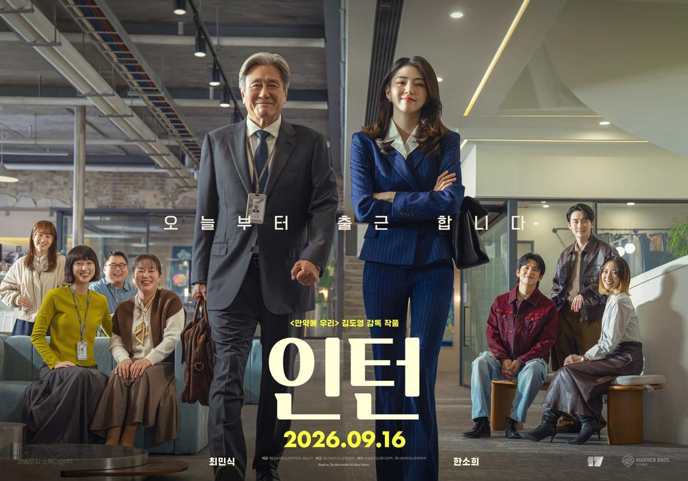

37년간 쌓아온 직장 경험
공장 바닥과 사무실에서 평생 몸으로 익힌 생산·품질·관리 노하우
✦ 경험을 AI로 정리하고 지식화
영화 〈인턴〉이 건네는 세대 상생의 메시지
최민식(기호)의 37년 현장 지혜 × 한소희(선우)의 혁신 기술
오랜 경험을 가진 시니어와 빠르게 변화하는 디지털 세대가 서로 배우고 협력하면서 새로운 가치를 만듭니다. 단순 은퇴 후 소일거리가 아닌, 평생 몸으로 익힌 제조·품질·영업 노하우를 AI로 디지털 자산화하여 청년 기업과 함께 뜁니다.
영화 「인턴」의 세대 상생과 리버스 멘토링에서 영감을 받은 시니어 평생교육 플랫폼 콘셉트입니다.
“경험은 결코 늙지 않는다” — 37년 경력의 시니어 인턴과 30대 열정 CEO의 특별한 동행

최민식 (기호) × 한소희 (선우)THE INTERN · WISDOM MEETS INNOVATION
경험을 낡은 것으로 보지 않고, 새로운 기술과 연결해 현장의 다음 해법을 만듭니다.
6 BRIDGES BETWEEN MOVIE & AI
영화 속 주인공 기호(최민식)의 실천적 행동을 시니어 AI 교육 체계로 완벽히 연결합니다.
공장 바닥과 사무실에서 평생 몸으로 익힌 생산·품질·관리 노하우
열정과 속도를 가진 선우와 연륜과 침착함을 가진 기호의 파트너십
낯설지만 두려워하지 않고 스마트폰과 컴퓨터를 하나씩 익히는 자세
위기 상황에서 당황하지 않고 핵심을 짚어내며 해법을 제시하는 혜안
훈계 대신 경청으로 다가가고 손수건을 건네며 마음을 여는 소통법
은퇴 후 멈추지 않고 매일 아침 옷을 차려입고 활기차게 출근하는 삶
A PRACTICAL AI JOURNEY
단계마다 배움에 그치지 않고, 내 이름으로 된 명확한 실무 결과물을 완성합니다.
ChatGPT·Gemini 사용법, 음성 대화, 스마트폰 활용법과 효과적인 질문 프롬프트를 배웁니다.
결과물 나만의 AI 음성 업무비서과거 직장 경험을 기록하고 업무 노하우 매뉴얼을 작성해 AI 기반 지식으로 체계화합니다.
결과물 AI 기반 업무 노하우 DB청년에게 최신 AI 기술을 배우고, 시니어의 조직 지혜를 전달하며 공동 프로젝트를 수행합니다.
결과물 청년-시니어 협동 AI 프로젝트엑셀과 AI 연계, 보고서·이메일 작성, 공정 데이터 분석 요약 및 반복 업무 자동화를 실습합니다.
결과물 공정·업무 자동화 개선 사례집전문 분야 지식 강의안을 AI로 제작하고, 후배 직장인 업무 지도 및 온라인 멘토링을 진행합니다.
결과물 나만의 AI 사내 강의 패키지시니어 AI 강사, 소상공인 AI 전환 지원, 스마트공장 기술고문으로의 새로운 커리어를 개척합니다.
결과물 기술고문 및 자문 제안서FIELD NOTE → STANDARD OPERATING PROCEDURE
머릿속에만 있던 30년 현장 노하우를 기업 표준작업지침서(SOP) 초안으로 자동 변환해 봅니다.
※ 이 체험은 입력 메모를 SOP 규격에 맞춰 구조화하는 브라우저 시뮬레이터입니다. 실제 작업 전에는 사내 표준 규격 및 안전 담당자의 최종 검토를 거치시기 바랍니다.
CROSS-GENERATION CO-CREATION
가르치는 사람과 배우는 사람을 나누지 않고, 서로의 전문성을 교환하며 함께 성장합니다.
문서에 다 담기지 않는 37년의 판단 기준, 고객과의 신뢰, 현장 위기 대응의 맥락을 전수합니다.
경험 · 현장 판단 · 직관최신 생성형 AI 도구와 디지털 업무 방식을 제안하고, 경험을 데이터로 검색·공유할 수 있게 돕습니다.
AI · 속도 · 디지털 혁신현장에 즉시 적용 가능한 표준 업무 가이드, 사내 교육 자료, 공정 개선 프로젝트를 공동으로 창출합니다.
공동 프로젝트 · 새로운 가치THE NEXT COMMUTE
평생 쌓은 전문성을 다음 세대와 산업 현장에 연결하는 4대 전문 트랙입니다.
공정과 품질을 꿰뚫는 현장 경험으로 자동화·AI 시스템의 도입과 현장 안착을 이끕니다.
제조·품질 노하우 전수 ✦선우와 같은 청년 창업가에게 고객 발굴, 납품 계약, 조직 운영의 위기관리 지혜를 나눕니다.
경영 연륜 전수 ✦골목상권 소상공인의 온라인 마케팅, 홍보 문구 작성, 고객 상담 자동화를 AI로 돕습니다.
지역 경제 활성화 ✦동년배 시니어의 눈높이에 맞춰 스마트폰과 AI를 쉽게 가르치며 디지털 격차를 해소합니다.
지식 나눔 강사 ✦본 코스는 단순 소일거리가 아닌 전문 자문위원 및 강사로서의 새로운 사회적 커리어를 지향합니다.
KNOW-HOW, SHARED FORWARD
훌륭한 현장 경험은 혼자만의 노하우에 머물러서는 안 됩니다.
나의 30년 이야기를 나누고, AI가 내놓은 답에 현장의 실제 감각을 보태 검증해 보세요.
가입하면 현장 경험과 질문을 나누고, 내가 쓴 글을 관리할 수 있어요.
FIELD STORIES · NEXT CHAPTER
현장에서 배운 것, 앞으로 도전해보고 싶은 일, AI를 접하며 느낀 소회를 편하게 나눠주세요.
FIELD WISDOM CHECKPOINT
현장수첩 변환기로 만든 SOP 초안이나 AI 답변을 올리고, 실제 작업 경험·안전 기준을 댓글로 함께 검증해 주세요.